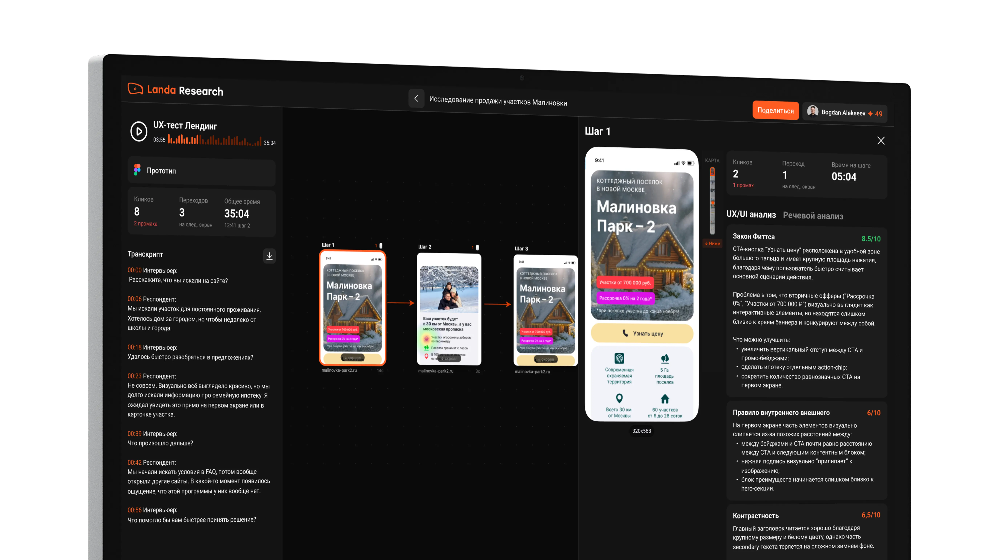
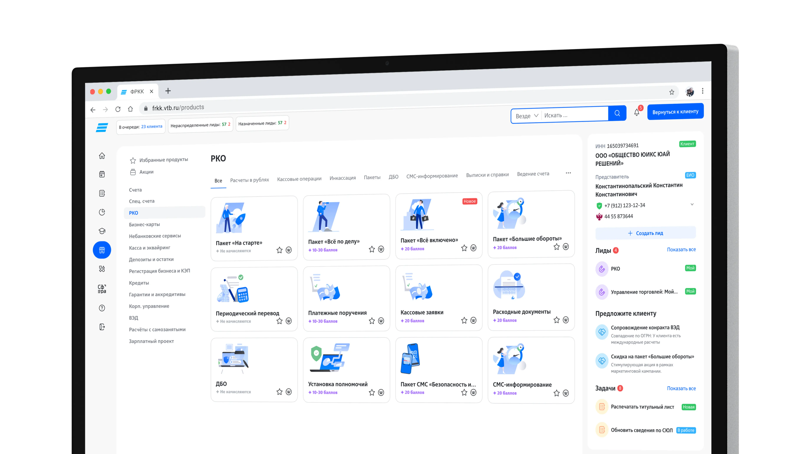
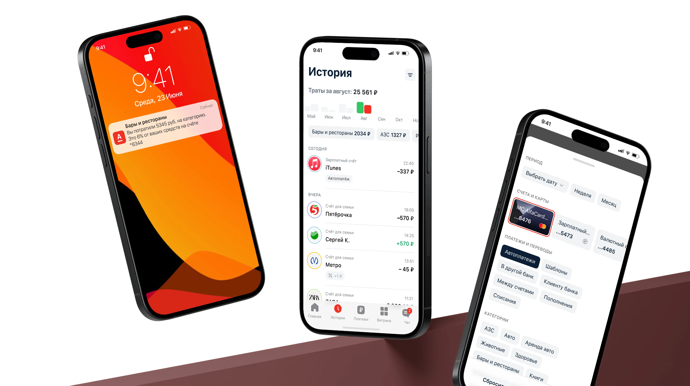

Дизайн-менеджер с 9+ лет опыта
цифровой и AI-трансформации
в fintech



Публикации
Эмоциональный дизайн – главный финтех-тренд 2026. Но российские банки уже живут в нём
Ассоциация Финтех назвала эмоциональный дизайн ключевым трендом 2026 года. Но если посмотреть на российский рынок — это уже не тренд, а новая норма. Сбер, Т-Банк, ВТБ и Альфа давно проектируют не просто интерфейсы, а эмоции: от дофамина в платежах до ощущения заботы и контроля.
Продуктовые дизайнеры не нужны
Хрень...Кажется, что именно те, кто слабо умеют в продукт, начинают заявлять, что нафиг продуктовую составляющую – хочу рисовать картинки.
Заблюрь свой дизайн. Если больно смотреть — переделывай
У меня есть метод для оценки интерфейса и всего лэйаута — заблюрить картинку и посмотреть на пятна, которые проступают через размытие. Это то, как пользователь видит интерфейс на самом деле. Не детали, не иконки, не ваш идеально подобранный шрифт — а пятна и контрасты.
Как мы в 5 раз ускорили прототипирование в ВТБ с AI
Вчера мы презентовали вице-президенту результаты работы над новой стратегией. Он ожидал увидеть прототипы для оценки UX-решений на макетах в Figma. Мы показали 4 полностью рабочих react-приложения с реальным скроллом, интерактивными элементами и переходами.
Омниканальность в банковских приложениях для дизайнеров
Омни позволяет клиенту взаимодействовать с банком через различные каналы: мобильное приложение, сайт, отделение банка, банкоматы, и при этом позволяет начать в одном месте, а продолжить в другом.
Про оценку навыков дизайнера. Проблема карт компетенций
В 2020 году мы проверили гипотезу найма junior-дизайнеров с потенциалом роста. В результате трое дизайнеров успешно работают на миддл-позиции. Важную роль в росте грейда сыграло внедрение карты компетенций дизайнеров.
Про дизайн-ревью. Как организовать процесс
Мы делаем омниканальную систему, в которую уже интегрированы более 60 приложений, а это как минимум более 60 команд. За 3 года я посмотрел больше 1000 макетов, общался с более 100 дизайнеров.
Как использовать GPT для ревью дизайна
Когда я в первый раз попробовал чат, я первым делом попытался скормить ему ссылку на прототип. Конечно же не сработало. Спустя несколько запросов оказалось...
Токсичность vs управленческая жёсткость
Мы оказались в ситуации, где 20+ ключевых команд не понимали, что именно и как нужно делать после принятия новой бизнес-стратегии. Передо мной стояла задача — залидировать UX/UI 100+ интеграций в ключевой канал продаж СМБ.